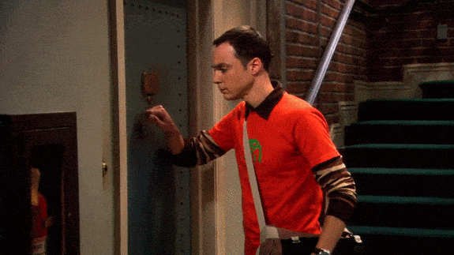
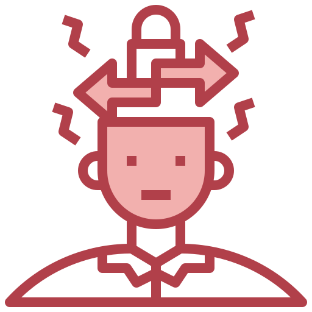
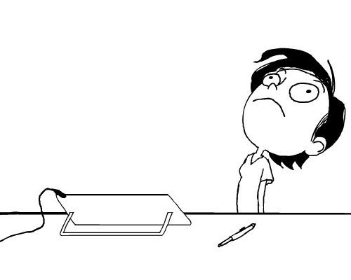
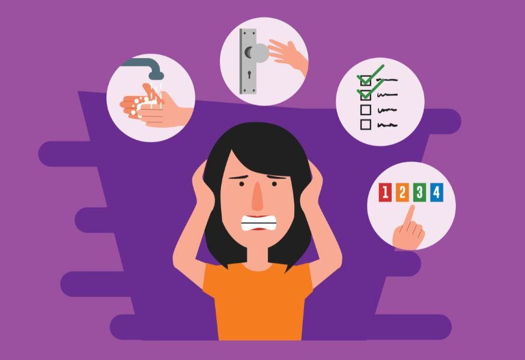
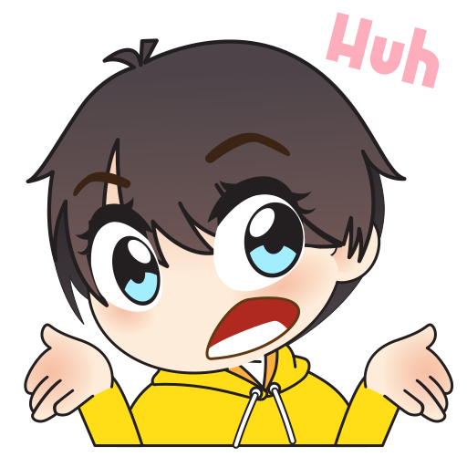

El trastorno obsesivo-compulsivo es una enfermedad mental que afecta la mente del usuario al presentarle diferentes pensamientos y ritules, donde habitan en tu mente de una forma 24/7. Afecta principalemnte al usuario, pero tambine su timepo, su vida y su vida social al no poder convivir bien con la sociedad.
¿Por qué eleji el tema?
Elegi este tema al ser un transtor que me parece un de los más dañinos para el ser humano y también curioso por la manera en la que se presentan y como no pueden controlar sus propios pensamientos, no tienen el control de su vida .

Los GIF son un tipo de animación creadada apartir de launión de diferentes fragmentos de dinujo en cadena.
TOC
08/10/22
Ranking
TOC
Daños colaterales
Síntomas
Causas
Contaminación
Repetir
Acumulación
Verificación
Orden
Consecuencias

Los GIF son un tipo de animación creadada apartir de launión de diferentes fragmentos de dinujo en cadena.
Los GIF son un tipo de animación creadada apartir de launión de diferentes fragmentos de dinujo en cadena.
Investigación
08/10/22
¿Qué es?
El trastorno obsesivo compulsivo (TOC) se caracteriza por un patrón de pensamientos y miedos no deseados (obsesiones) que provocan comportamientos repetitivos (compulsiones). Estas obsesiones y compulsiones interfieren en las actividades diarias y causan un gran sufrimiento emocional.Puedes intentar ignorar o detener tus obsesiones, pero eso solo aumenta tu sufrimiento emocional y ansiedad. Finalmente, sientes la necesidad de realizar actos compulsivos para tratar de aliviar el estrés. A pesar de los esfuerzos por ignorar o deshacerte de los pensamientos o impulsos que te molestan, estos vuelven una y otra vez. Esto conduce a más comportamientos ritualistas, el círculo vicioso del trastorno obsesivo compulsivo. El trastorno obsesivo-compulsivo a menudo enfoca la atención en temas específicos.El ciclo de obsesiones y compulsiones requiere mucho tiempo diario
Blogero de International OCD Foundation
TOC
El trastorno obsesivo-compulsivo a menudo implica extremos y compulsiones. Pero también es posible tener síntomas imaginarios o síntomas extremos. Puede o no saber que sus compulsiones y compulsiones son extremas o irracionales, pero toman tiempo y afectan su vida diaria, relaciones, escuela o trabajo.
Son acciones (ordenar cosas, pisar determinados lugares, mirar, lavarse las manos, etc.) o acciones mentales (leer, repetir palabras en silencio, leer otras cosas, etc.) que se repiten en la naturaleza y su función es reducir. sufrir o prevenir un mal evento (lavarse las manos para prevenir infecciones, pisar ciertos lugares para evitar un evento considerado malo en la familia, etc.). Las interrupciones son todo tipo de fenómenos visibles.
Se repiten pensamientos, ideas o imágenes, y el tema interfiere y crea una gran tensión. El sujeto intentará borrar, ignorar o reprimir estos pensamientos por la fuerza, la cultura o la fuerza. Más probable:
miedo a contraer enfermedades; debe ordenar los productos; inquietud extrema; sentimientos sexuales; agudo para pensar.
Daños Colaterales
El trastorno obsesivo compulsivo (TOC) se asocia con una mala calidad de vida. Una persona que la padece y no recibe tratamiento suele tener cambios en su vida personal y profesional. El tiempo se gasta todos los días en la locura y la compulsión. La pérdida de tiempo da como resultado la procrastinación y la reducción de las actividades productivas y de ocio. La evitación de situaciones puede provocar un miedo intenso o la evitación de actividades inesperadas asociadas con la incertidumbre.El TOC está relacionado con una menor calidad de vida.
Blogero de Mente A Mente
Calidad
Perder un trabajo porque no confías en ti mismo para hacer bien el trabajo.
Evitar hospitales o clínicas. O porque se dice que son zonas infectadas. O por miedo a volverse loco con una enfermedad grave si el médico encuentra algo raro.
Desarrollo de lesiones dermatológicas. Por ejemplo, contraer dermatitis por lavarse las manos con frecuencia.
Interferir en el propio tratamiento por temor a que el fármaco esté contaminado, provocando efectos secundarios graves, o sospechando que el especialista se ha equivocado en el diagnóstico.
Establecer reglas o restricciones a los miembros de la familia. Por ejemplo, con una sensación extrema de infección, algunos pacientes obligan a sus familiares a lavar toda su ropa cada vez que salen de casa.
Causas
No se sabe también la proceso del TOC, aunque sí sabemos que no surge como respuesta a un supuesto “pleito intrapsíquico” ni siquiera por un “pleito carnal reprimido” como decían las teorías psicoanalíticas antiguas. Tampoco se adeudo al significación de los padres sobre el niño, ni al salida de un religioso menor, ni al estress del colegio, etc. Por la competencia de los antidepresivos inhibidores de recaptación de serotonina (ISRS) en el receta del TOC, se piensa que se adeudo a una cambio de la serotonina. Estudios genéticos indican que el TOC tiene lista con algunos trastornos por tics, como el deterioro de Tourette (tics motores y vocales). Se han opuesto todavía alteraciones en la funcion en circuitos cerebrales que comunican una departamento del encéfalo, los ganglios basales, con la residuo cerebral, y en ostensible en una departamento llamamiento asunto caudado.hay evidencia sobre la influencia de ciertos factores de riesgo
Blogero de Neuros Center
Causas
Causas genéticas del TOC Los resultados de los estudios realizados entre familiares y gemelos son suficientemente convincentes como para que la comunidad científica coincida en la importancia de los factores genéticos en la expresión del trastorno obsesivo compulsivo. Sin embargo, a pesar de los múltiples estudios y de los más de 80 genes candidatos propuestos, ninguno ha gozado de una significación suficiente. Los estudios en familias han confirmado que algo más del 20 los familiares de un paciente también tienen trastorno obsesivo compulsivo, y otros familiares pueden tener también síntomas sin llegar a cumplir todos los criterios diagnósticos del trastorno. Esta familiaridad es, en parte, debido a factores genéticos. No obstante, también resulta evidente que hay factores culturales y ambientales que influyen en el inicio y en el mantenimiento de estas conductas obsesivo-compulsivas, que pueden llegar a transmitirse transgeneracionalmente de padres a hijos.
Una situación estresante o estresante. Pueden detener los síntomas del TOC. Esto no significa que el TOC sea causado por el estrés, pero sí significa que el estrés puede causar el TOC o mantener los síntomas de la afección después de que comienza.El estrés no es ni necesario ni suficiente para desarrollar Trastorno Obsesivo Compulsivo. Claramente, el estrés no causa TOC porque hay muchos que lo padecen y no identifican algún estresor o detonante específico que haya iniciado sus síntomas. Mas aún, la mayoría de las personas experimentan estrés y no desarrollan TOC. Dicho esto, el estrés puede ser un detonante para aquellas personas susceptibles al TOC, las personas con el trastorno son susceptibles al estrés:
puede prender los síntomas, agravarlos, o detonar recaídas. Irónicamente, el TOC crea niveles altos de estrés, por lo tanto el TOC y el estrés se alimentan mutuamente. Para algunos, los mensajes diarios de padres, maestros, personas y medios de comunicación son suficientes para desencadenar síntomas.
Factores ambientales Existe evidencia considerable de que la exposición a eventos estresantes y traumáticos constituye un importante factor de riesgo ambiental. Los estudios indican que entre el 25% y el 67 los pacientes con TOC informan de eventos vitales significativos, la mayoría estresantes, relacionados con el inicio del trastorno. Además, la gravedad tanto de las obsesiones como de las compulsiones correlaciona con la cantidad de eventos vitales estresantes experimentados en el año anterior al inicio del TOC y durante la vida del paciente. Otro dato relevante que se ha encontrado es que las personas que han sufrido episodios traumáticos en la infancia, como abuso físico o sexual, tienen de 5 a 9 veces más probabilidades de tener TOC en la edad adulta que aquellos sin antecedentes traumáticos.
Con la enfermedad mental del Toc surge gracias a que me he adentrado poco a poco gracias a mi interes por las diferentes enfermedades mentales. Tambien cuenta con la cercania que he tenido de una persona que sufre con sus compulsiones.
¿Qué animación es más complicado
La Animación Tradicional
Ejemplo de contenido
texto de descripcion de mi ilustracion.
 Porque el TOC es Peligrosos
12/02/22
El TOc es peligroso
El trastorno obsesivo compulsivo suele comenzar en la adolescencia o en la edad adulta joven, pero puede comenzar en la infancia. Los síntomas suelen comenzar progresivamente y tienden a variar en su gravedad a lo largo de la vida. Los tipos de obsesiones y compulsiones que experimentas también pueden cambiar con el tiempo. Los síntomas suelen empeorar cuando se experimenta un mayor estrés. El trastorno obsesivo compulsivo, que suele considerarse un trastorno de por vida, puede tener síntomas de leves a moderados o ser tan grave y prolongado que se vuelve incapacitante.
 TOC, ¿Dónde más encontrar?
TOC, ¿Dónde más encontrar?
 Ejemplo en video
Ejemplo en video ¿Qué animación es más complicado
¿Qué animación es más complicado